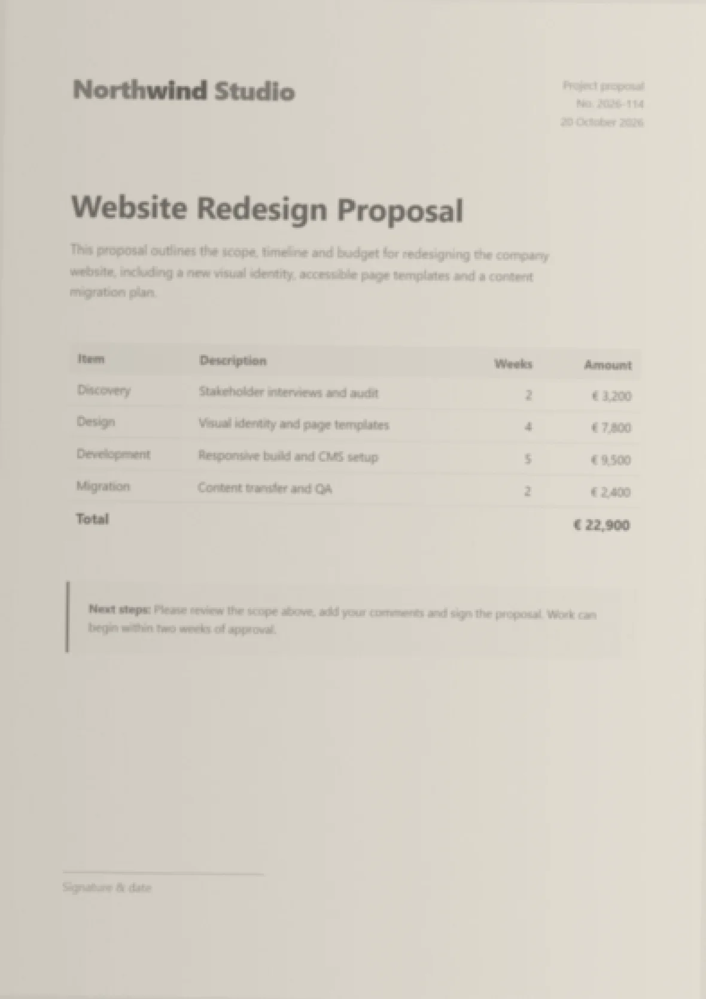
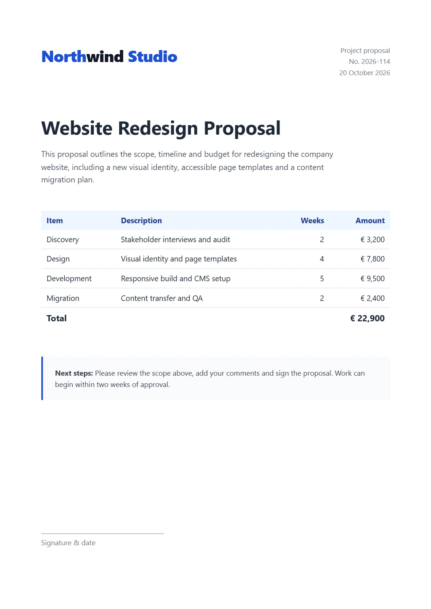
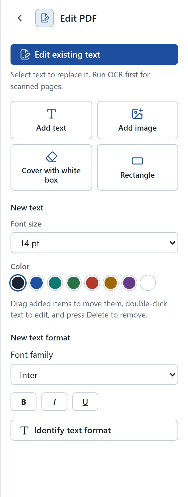
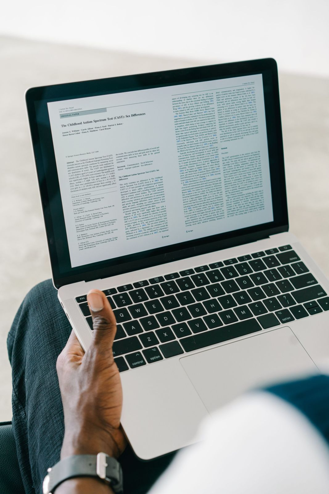
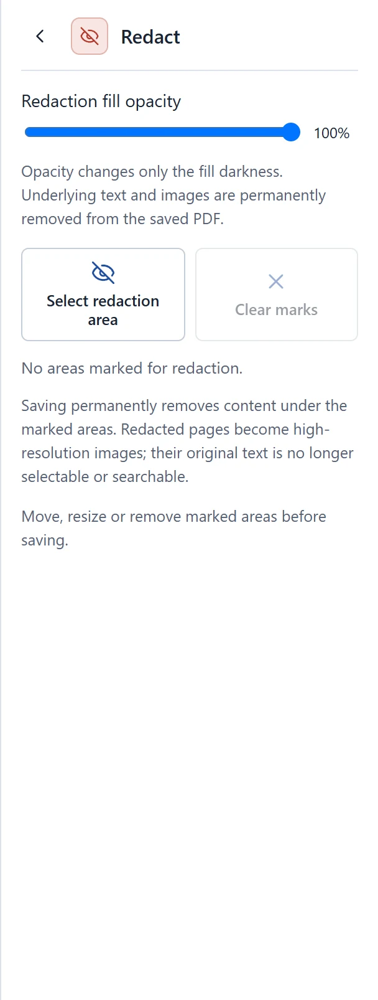
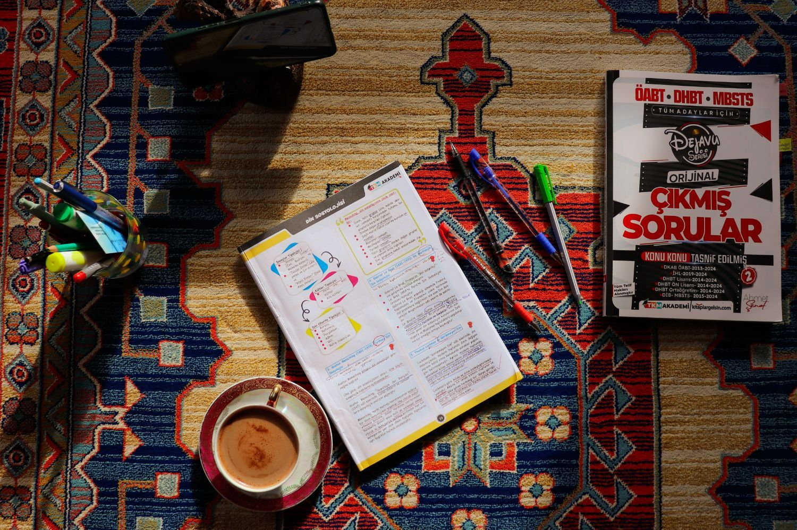
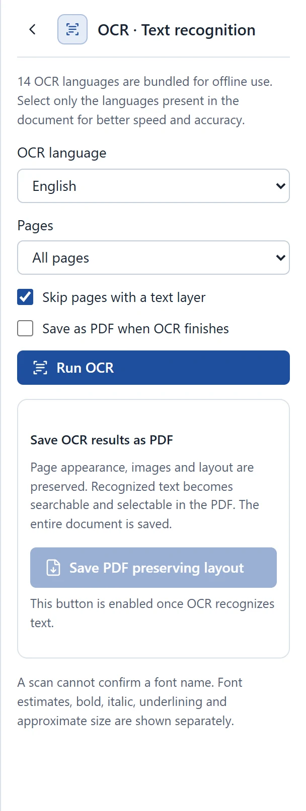
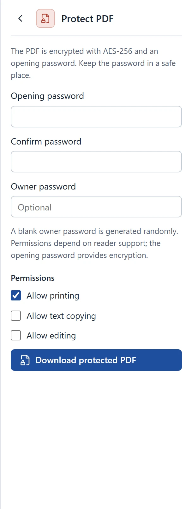
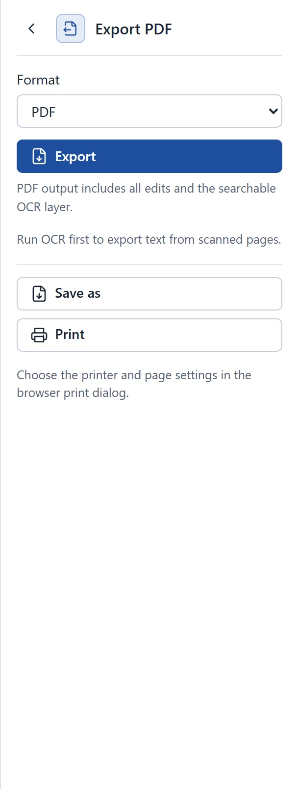
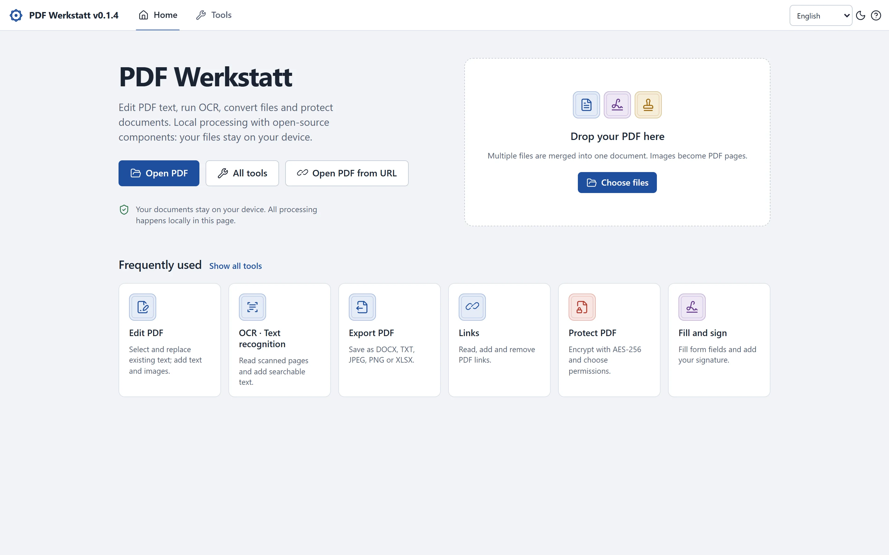

In the browser
Chrome, Edge or Firefox. Nothing to install.
Text, OCR, signatures and passwords, all processed in your browser.


From fixing one word to locking the whole file.




English selected.

Invoice for , sent to . Pay to account by .
| Setting | What happens |
|---|---|
| Encryption | AES-256, standard security handler, revision 6 |
| Opening password | Typed twice, never stored |
| Owner password | Generated at random when left blank |
| Permissions | Printing, copying and editing, each on or off |

| Format | You get |
|---|---|
| Your edits and the searchable OCR layer | |
| Word | Editable text, or page images that keep the look |
| Text | UTF-8 text in reading order |
| Images | JPEG or PNG pages at 72, 150 or 300 dpi |
| Excel | One worksheet per page |

Page three, fixed.
TinosMetric match for Times
Online in a tab, or one file that works with the cable pulled.
Chrome, Edge or Firefox. Nothing to install.
One HTML file, about 64 MiB, OCR included.
Turkish to Persian, bundled.
English, German and Turkish, in light or dark.
Free and open source. No account, no upload.
